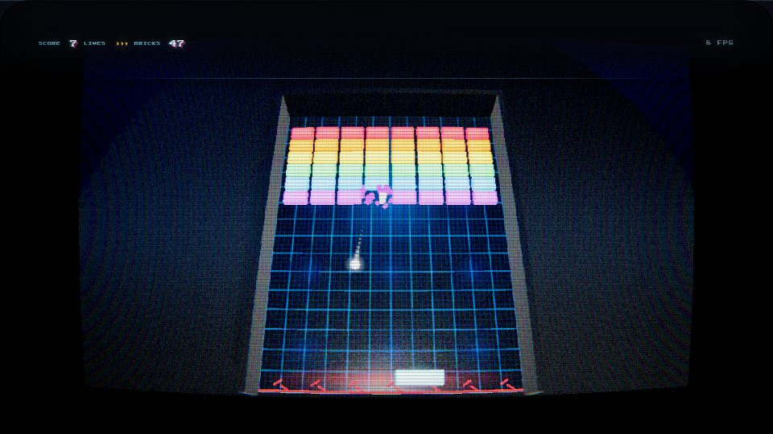
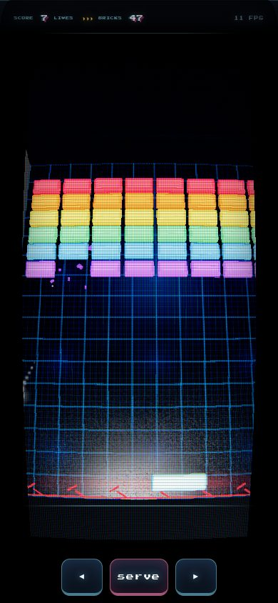
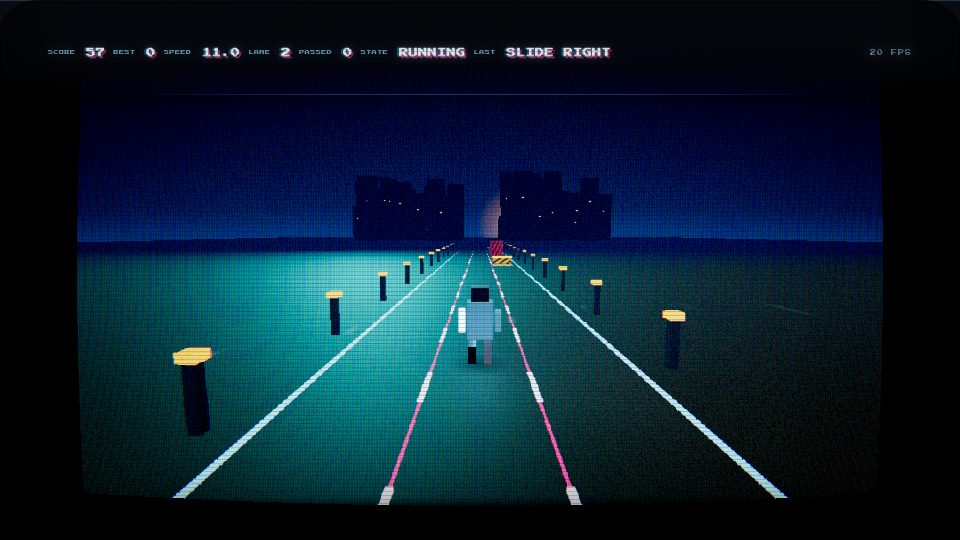
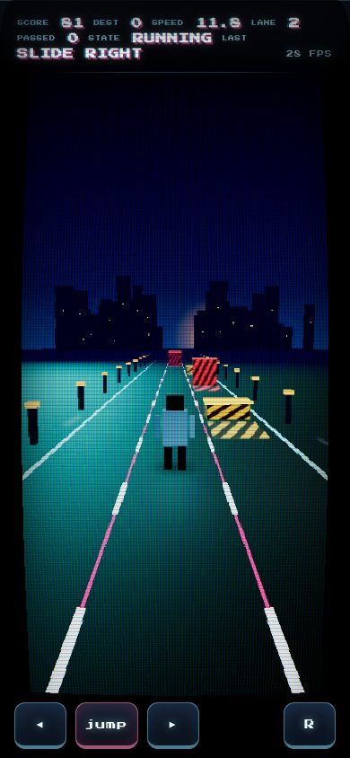
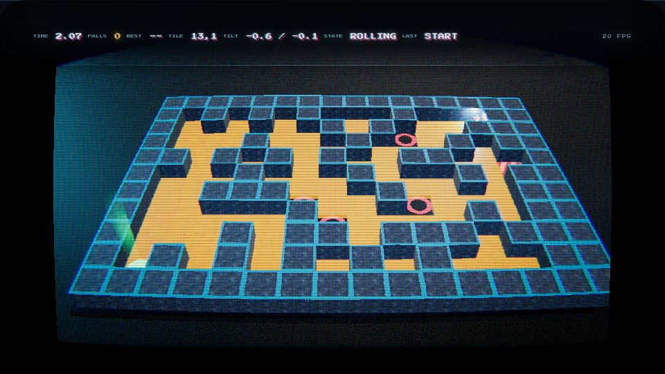
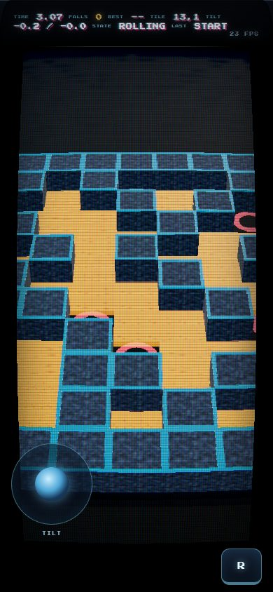
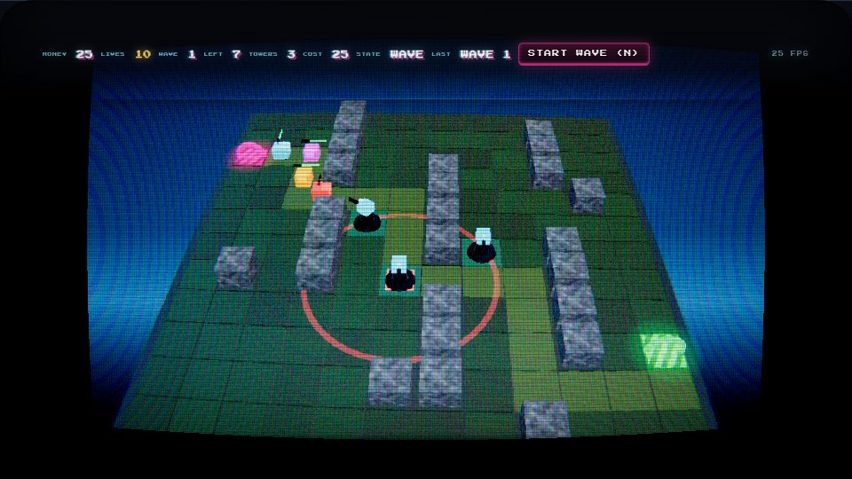
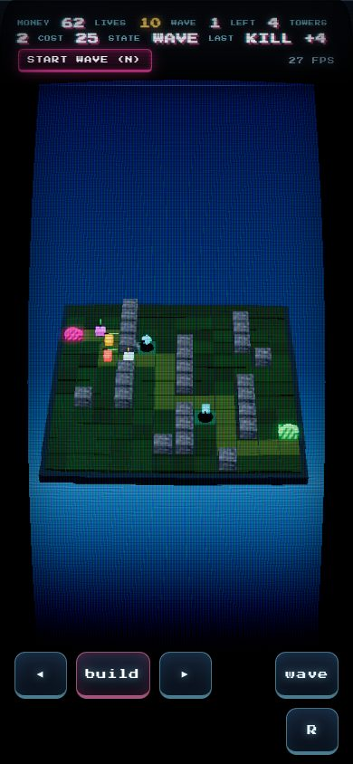
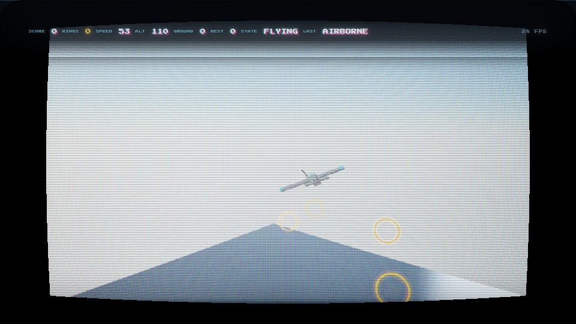
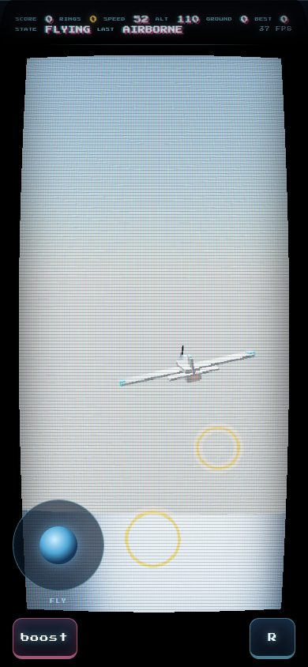

FIVE GAMES
Three.js, 0.170.0 from a CDN, plain static files — no build step, no npm, no server. All five run on one shared arcade kit: a CRT and cabinet bezel, procedural textures, particles, bloom, WebAudio sound and a HUD in the same typeface. Every one of them is playable on a phone with touch controls. The pictures below are after the polish pass, with the phone layout beside them; the before pictures and the numbers are in the README.


1 · Breakout
Neon room, PMREM reflections, ball trail, brick shatter, shockwave rings, camera shake, 53 bricks.
Neon bricks that keep their row colour, a lit grid floor, contact shadow, tighter trail, screen flashes, a card HUD, phone drag and chips. POLISH.md


2 · Runner
Chrome runner on a scrolling motorway: speed ramps, three lanes, jump the hurdles, slide under the tall ones.
Dusk palette, city skyline, sun in the haze, hazard bands in the obstacle's colour, fog that dissolves the horizon, phone chips. POLISH.md


3 · Marble Maze
A wooden board in real physics (cannon-es): tilt it, roll the chrome marble to the green pad, miss a tile and you fall.
Grade and HUD from the shared pass, a goal beacon that stopped blooming across the tube, softer wall shadows, a stick for the tilt. POLISH.md


4 · Tower Defense
The enemies path-find, and re-path around whatever you build. A tower that seals the lane is refused, so placement is a decision.
Darker turf and a warm lane, shadow discs that are no longer holes, wave card, taps on the board to build. POLISH.md


5 · Flight
Infinite terrain from 60 lines of noise, flat-shaded by height, sky and fog, bank-to-turn jet, ring gates that burst and recycle.
Sky scattering that stopped washing the tube, a chase camera that opens up in portrait, a stick for pitch and roll, boost on a thumb. POLISH.md
POLISH PASS — 2026-10-19, TST-5
Two visual rounds per game plus a phone round: the shared CRT/HUD/effects kit was regraded, then each game was taken apart frame by frame. Every change was shot at start, mid-play and game-over, on desktop and on a phone viewport, and kept only if the picture improved and nothing else moved. fps is idle / play / game-over, measured in headless Chromium on the software rasteriser next to the model server — it is a floor, not the frame rate a real GPU gets, and it is compared round to round on the same machine.
| game | fps before | fps after | phone fps | look | what moved |
|---|---|---|---|---|---|
| 1 Breakout | 9.5 / 8.5 / 8.7 | 9.0 / 8.5 / 8.7 | 11.5 / 11 / 10.7 | 3.5 → 4.5 | washed pastel bricks and a black room → neon that keeps its row colour, a lit grid floor, a paddle with a contact shadow |
| 2 Runner | 11 / 10.5 / 10.7 | 11 / 12 / 12 | 15.5 / 16.5 / 16 | 3 → 4.5 | a flat daytime wash → a night motorway: city skyline, sun in the haze, hazard bands painted on the road in the obstacle's colour |
| 3 Marble Maze | 7.5 / 6.5 / 6.7 | 7.5 / 7 / 6.7 | 11.5 / 11.5 / 12 | 3.5 → 4 | the goal beacon bloomed a green streak across the tube → dimming it changed nothing (additive, tone-mapped off: above the bloom threshold at any opacity), normal blending fixed it; wall shadows no longer blacken the floor |
| 4 Tower Defense | 6.5 / 6.5 / 6.7 | 10 / 10.5 / 9.3 | 12.5 / 12.5 / 12 | 3 → 3.5 | bright flat turf with black holes under the towers → darker turf, a warm lane that reads, shadows at half strength |
| 5 Flight | 16 / 18.5 / 14.7 | 24.5 / 25 / 15.3 | 36 / 35 / 23.3 | 2.5 → 3.5 | the sky scattered to a pale wash with nothing in frame → deeper scattering, terrain and ring gates in the picture |
- Phone: drag / stick / chips per game, drawn only on a touch device, driving the same input path as the keyboard; portrait camera, compact HUD, safe areas, no scroll and no pinch zoom, device pixel ratio capped (2 on a tablet, 1.5 on a phone) and a frame-time watchdog that drops the bloom and the shadow map if a phone cannot hold the frame rate. Controls per game.
- Checks:
tools/polish.shshoots start / play / game-over from the game's own end verbs;tools/mobilecheck.mjsdrives each game with real CDP touch events in a portrait touch context and reads the state back — 5/5 pass;node tools/verify.mjsruns the whole console/FPS sweep. - The bug worth knowing: the new colour grade declared three GLSL uniforms and never added
them to the material, so WebGL defaulted them to 0 and every frame became mid-grey with scanlines
on it, with no console output at all. Four rounds were measured against that grey screen before it
was caught by looking at a phone screenshot. The CRT pass now diffs the uniforms declared in GLSL
against the uniforms the material provides and warns. Evidence:
1-breakout/shots/bug-greywash-*.jpg.